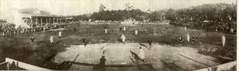

Estádio da Baixada
O Estádio da Baixada estava inicialmente localizado em um terreno rodeado por mato e morro, no Bairro Moinhos de Vento, de propriedade de Laura Mostardeiro, a qual cedeu parte do terreno para o Estado.
O local era conhecido como “Schützenverein Platz”[1] e situava-se em frente a Sociedade dos Atiradores Alemães.
Estádio da Baixada
Projetado pelo arquiteto Plínio Oliveira Almeida,vencedor do concurso realizado em 1950 para esse fim, foi considerado na época de sua construção o maior estádio particular do mundo.
Estádio Arena do Grêmio
A Arena do Grêmio é um estádio de futebol localizado no bairro Farrapos, Porto Alegre, Rio Grande do Sul.
Sua capacidade oficial é para 55.662 lugares, sendo o 7º maior estádio do Brasil.
No Sisbrace, sistema de avaliação de estádios de futebol do Ministério do Esporte do Brasil, a Arena do Grêmio recebeu classificação máxima em todos os aspectos.
No mesmo ano da inauguração, foi eleito o "Estádio do Ano", pelo site "StadiumDB", ficando a frente de outras arenas como o Estádio Nacional de Varsóvia.
O local era conhecido como “Schützenverein Platz”[1] e situava-se em frente a Sociedade dos Atiradores Alemães.